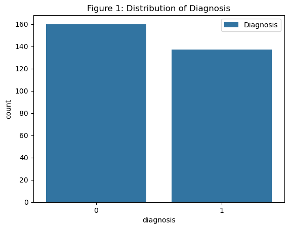
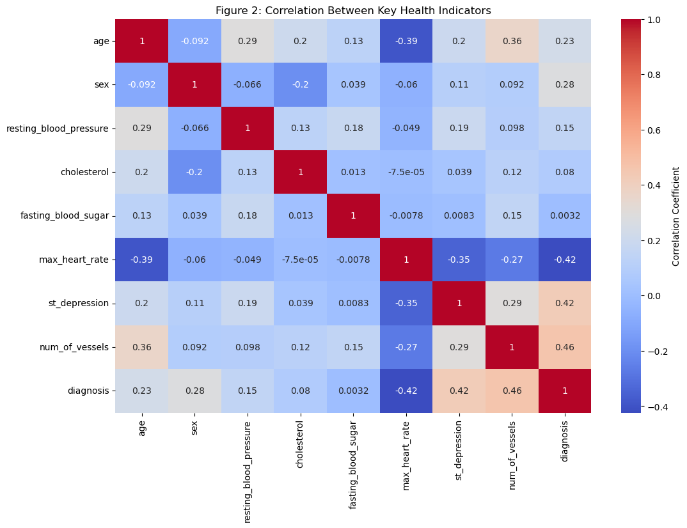
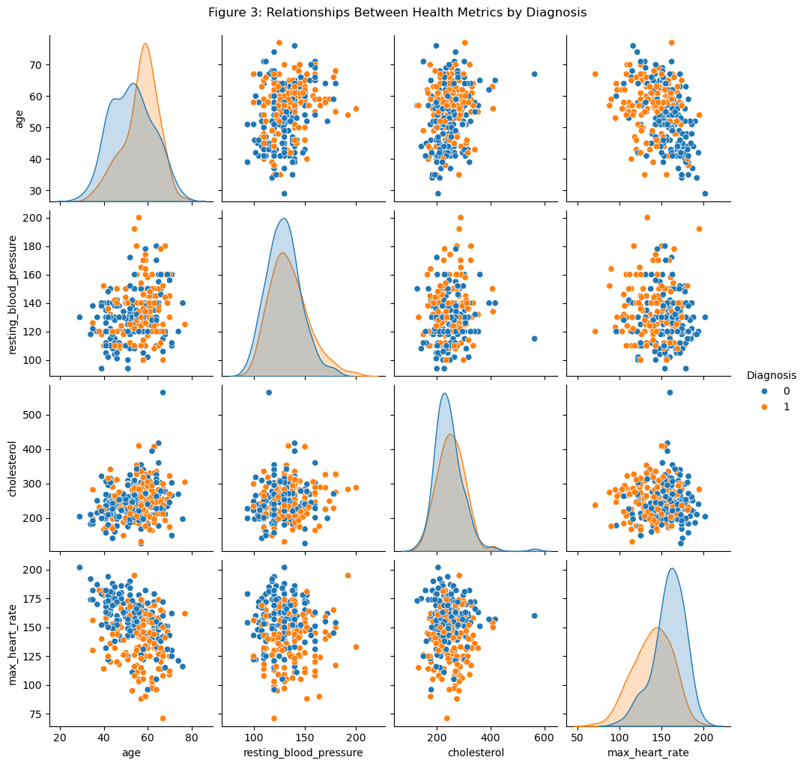
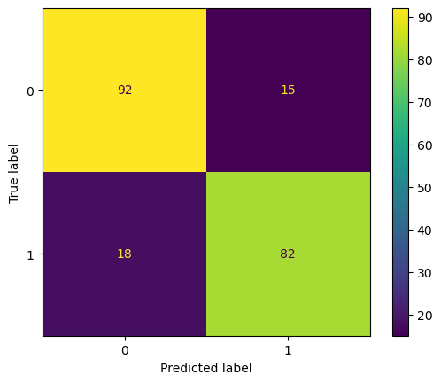
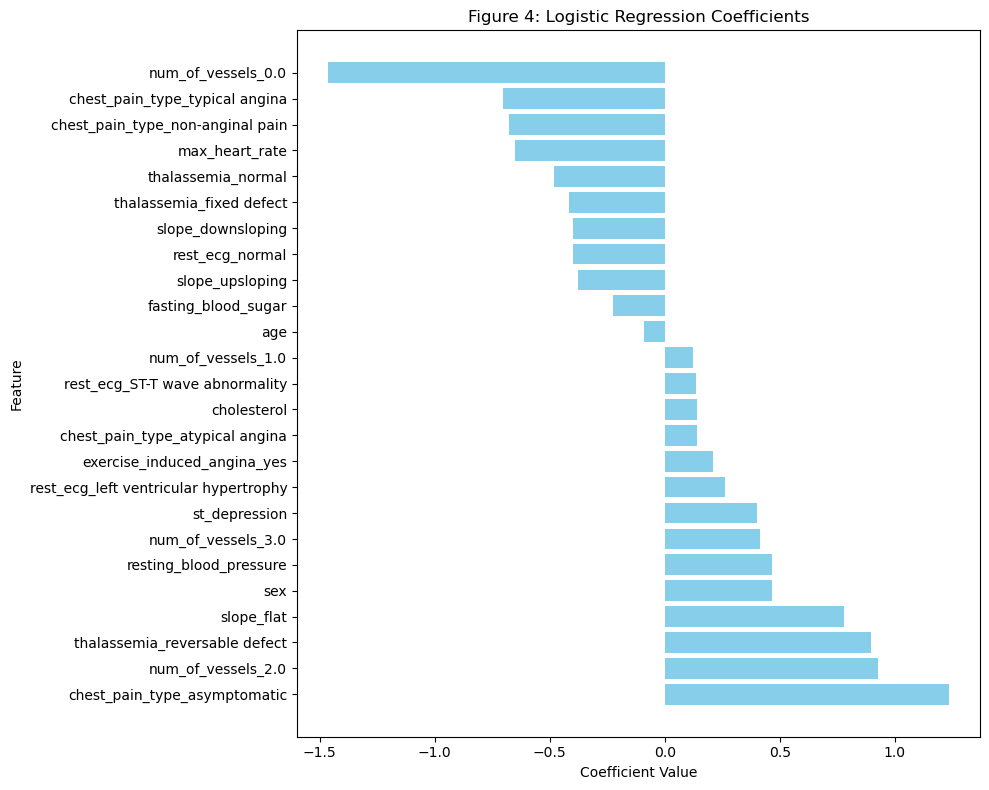

import numpy as np
import pandas as pd
import warnings
import pandera as pa
from pandera import Column, Check, DataFrameSchema
from deepchecks.tabular import Dataset
from deepchecks.tabular.checks import FeatureLabelCorrelation, FeatureFeatureCorrelation, PredictionDrift
warnings.filterwarnings('ignore')Heart Disease Prediction
Authors: Anna Nandar, Brian Chang, Celine Habashy, Yeji Sohn
Summary
In this project, we developed a classification system using Logistic Regression and Decision Tree models to predict heart disease diagnosis based on multiple features such as age, blood pressure, cholesterol, and more. The data was sourced from the UCI Heart Disease dataset, and preprocessing involved cleaning, transforming, and encoding categorical variables for analysis. According to our experiments, the logistic regression model achieved the high accuracy 82%. Decision Tree provided competitive results but lacked the interpretability of logistic regression. The results suggest that machine learning models can be used to predict heart disease effectively, aiding healthcare providers in early detection and intervention.
Introduction
Heart disease is one of the leading causes of death worldwide, and early detection is crucial for improving treatment outcomes and patient survival rates. Timely diagnosis can help healthcare providers make more informed decisions, allocate resources more effectively, and ultimately save lives. Traditional diagnostic methods often involve manual interpretation of clinical test results, which can be time-consuming, subjective, and prone to errors. As health data becomes increasingly available, machine learning has emerged as a powerful tool for diagnosing and predicting diseases, including heart disease.
This project explores the application of machine learning models to classify individuals based on their likelihood of having heart disease using clinical data. Specifically, we use the UCI Heart Disease dataset, which contains medical records of patients, including features such as age, chest pain type, blood pressure, cholesterol levels, and other relevant clinical attributes. The dataset also includes a binary diagnosis label indicating the presence or absence of heart disease, which forms the basis for predictive modeling.
For this analysis, we focus on the Heart Disease dataset, which includes 13 features. These features represent key clinical indicators used to assess cardiovascular health, and the target variable categorically indicates the presence or absence of heart disease. For the purpose of this analysis, we focus on a binary classification problem, where we aim to distinguish between individuals with no heart disease and those with some form of heart disease. Additionally, the dataset has been anonymized to protect patient privacy, with identifiers such as names and social security numbers replaced by anonymous values.
The main questions addressed in this analysis are:
- What is the overall accuracy of a classification model for heart disease prediction?
- Which features are most predictive of the presence of heart disease?
By applying machine learning to this dataset, we aim to demonstrate how predictive modeling can aid in the early diagnosis of heart disease, providing more accurate and timely insights that could improve healthcare outcomes and resource allocation.
1. About Data
The dataset used in this project is UCI Heart Disease dataset consisting of 303 patients records (https://archive.ics.uci.edu/dataset/45/heart+disease). The dataset is anonymized to protect patient privacy and includes 13 features that provide valuable insights into an individual’s health status.
Key Features:
- age: The age of the patient in years.
- sex: The gender of the patient (1 = male, 0 = female).
- chest_pain_type: Indicates the type of chest pain experienced, categorized as:
- 0: Typical angina
- 1: Atypical angina
- 2: Non-anginal pain
- 3: Asymptomatic
- resting_blood_pressure: The patient’s resting blood pressure in mmHg.
- cholesterol: Serum cholesterol levels in mg/dL.
- fasting_blood_sugar: A binary feature indicating if fasting blood sugar is > 120 mg/dL (1 = true, 0 = false).
- rest_ecg: Resting electrocardiogram results, coded as:
- 0: Normal
- 1: Having ST-T wave abnormality
- 2: Showing probable or definite left ventricular hypertrophy.
- max_heart_rate: Maximum heart rate achieved during exercise.
- exercise_induced_angina: A binary feature indicating the presence of exercise-induced angina (1 = yes, 0 = no).
- st_depression: ST depression induced by exercise relative to rest.
- slope: The slope of the peak exercise ST segment:
- 0: Upsloping
- 1: Flat
- 2: Downsloping.
- num_of_vessels: The number of major vessels (0–3) colored by fluoroscopy.
- thalassemia: A categorical feature representing a blood disorder:
- 0: Normal
- 1: Fixed defect
- 2: Reversible defect.
- diagnosis: The target variable, indicating the presence or absence of heart disease:
- 0: No heart disease
- 1: Heart disease (aggregated from severity levels 1–4 in the original dataset).
2. Data Processing
# Retrieve the data from the ucimlrepo
from ucimlrepo import fetch_ucirepo
heart_disease = fetch_ucirepo(id=45)
X = heart_disease.data.features
y = heart_disease.data.targets
data = X.copy()
data['Diagnosis'] = y
print("Dataset Shape:", data.shape)
print("Columns:", data.columns)
# Save the raw
data.to_csv("../data/raw/raw_heart_disease_data.csv", index=False)Dataset Shape: (303, 14)
Columns: Index(['age', 'sex', 'cp', 'trestbps', 'chol', 'fbs', 'restecg', 'thalach',
'exang', 'oldpeak', 'slope', 'ca', 'thal', 'Diagnosis'],
dtype='object')df = pd.read_csv("../data/raw/raw_heart_disease_data.csv")
df| age | sex | cp | trestbps | chol | fbs | restecg | thalach | exang | oldpeak | slope | ca | thal | Diagnosis | |
|---|---|---|---|---|---|---|---|---|---|---|---|---|---|---|
| 0 | 63 | 1 | 1 | 145 | 233 | 1 | 2 | 150 | 0 | 2.3 | 3 | 0.0 | 6.0 | 0 |
| 1 | 67 | 1 | 4 | 160 | 286 | 0 | 2 | 108 | 1 | 1.5 | 2 | 3.0 | 3.0 | 2 |
| 2 | 67 | 1 | 4 | 120 | 229 | 0 | 2 | 129 | 1 | 2.6 | 2 | 2.0 | 7.0 | 1 |
| 3 | 37 | 1 | 3 | 130 | 250 | 0 | 0 | 187 | 0 | 3.5 | 3 | 0.0 | 3.0 | 0 |
| 4 | 41 | 0 | 2 | 130 | 204 | 0 | 2 | 172 | 0 | 1.4 | 1 | 0.0 | 3.0 | 0 |
| ... | ... | ... | ... | ... | ... | ... | ... | ... | ... | ... | ... | ... | ... | ... |
| 298 | 45 | 1 | 1 | 110 | 264 | 0 | 0 | 132 | 0 | 1.2 | 2 | 0.0 | 7.0 | 1 |
| 299 | 68 | 1 | 4 | 144 | 193 | 1 | 0 | 141 | 0 | 3.4 | 2 | 2.0 | 7.0 | 2 |
| 300 | 57 | 1 | 4 | 130 | 131 | 0 | 0 | 115 | 1 | 1.2 | 2 | 1.0 | 7.0 | 3 |
| 301 | 57 | 0 | 2 | 130 | 236 | 0 | 2 | 174 | 0 | 0.0 | 2 | 1.0 | 3.0 | 1 |
| 302 | 38 | 1 | 3 | 138 | 175 | 0 | 0 | 173 | 0 | 0.0 | 1 | NaN | 3.0 | 0 |
303 rows × 14 columns
# Rename column names to be human readable
new_column_names = ["age", "sex", "chest_pain_type", "resting_blood_pressure", "cholesterol", "fasting_blood_sugar",
"rest_ecg", "max_heart_rate", "exercise_induced_angina", "st_depression", "slope",
"num_of_vessels", "thalassemia", "diagnosis"]
df.columns = new_column_names2.2. Checking the unique values for each column
df['num_of_vessels'].unique()array([ 0., 3., 2., 1., nan])df['sex'].unique()array([1, 0], dtype=int64)df['chest_pain_type'].unique()array([1, 4, 3, 2], dtype=int64)df['fasting_blood_sugar'].unique()array([1, 0], dtype=int64)df['rest_ecg'].unique()array([2, 0, 1], dtype=int64)df['thalassemia'].unique()array([ 6., 3., 7., nan])2.3. Map the values with the provided labels
df.loc[(df['chest_pain_type'] == 1), 'chest_pain_type'] = 'typical angina'
df.loc[(df['chest_pain_type'] == 2), 'chest_pain_type'] = 'atypical angina'
df.loc[(df['chest_pain_type'] == 3), 'chest_pain_type'] = 'non-anginal pain'
df.loc[(df['chest_pain_type'] == 4), 'chest_pain_type'] = 'asymptomatic'df.loc[(df['fasting_blood_sugar'] == 'yes'), 'fasting_blood_sugar'] = 1
df.loc[(df['fasting_blood_sugar'] == 'no'), 'fasting_blood_sugar'] = 0df.loc[(df['rest_ecg'] == 0), 'rest_ecg'] = 'normal'
df.loc[(df['rest_ecg'] == 1), 'rest_ecg'] = 'ST-T wave abnormality'
df.loc[(df['rest_ecg'] == 2), 'rest_ecg'] = 'left ventricular hypertrophy'df.loc[(df['exercise_induced_angina'] == 0), 'exercise_induced_angina'] = 'no'
df.loc[(df['exercise_induced_angina'] == 1), 'exercise_induced_angina'] = 'yes'df.loc[(df['slope'] == 1), 'slope'] = 'upsloping'
df.loc[(df['slope'] == 2), 'slope'] = 'flat'
df.loc[(df['slope'] == 3), 'slope'] = 'downsloping'df.loc[(df['thalassemia'] == 3.), 'thalassemia'] = 'normal'
df.loc[(df['thalassemia'] == 6.), 'thalassemia'] = 'fixed defect'
df.loc[(df['thalassemia'] == 7.), 'thalassemia'] = 'reversable defect'df.loc[(df['diagnosis'] == 2), 'diagnosis'] = 1
df.loc[(df['diagnosis'] == 3), 'diagnosis'] = 1
df.loc[(df['diagnosis'] == 4), 'diagnosis'] = 1df| age | sex | chest_pain_type | resting_blood_pressure | cholesterol | fasting_blood_sugar | rest_ecg | max_heart_rate | exercise_induced_angina | st_depression | slope | num_of_vessels | thalassemia | diagnosis | |
|---|---|---|---|---|---|---|---|---|---|---|---|---|---|---|
| 0 | 63 | 1 | typical angina | 145 | 233 | 1 | left ventricular hypertrophy | 150 | no | 2.3 | downsloping | 0.0 | fixed defect | 0 |
| 1 | 67 | 1 | asymptomatic | 160 | 286 | 0 | left ventricular hypertrophy | 108 | yes | 1.5 | flat | 3.0 | normal | 1 |
| 2 | 67 | 1 | asymptomatic | 120 | 229 | 0 | left ventricular hypertrophy | 129 | yes | 2.6 | flat | 2.0 | reversable defect | 1 |
| 3 | 37 | 1 | non-anginal pain | 130 | 250 | 0 | normal | 187 | no | 3.5 | downsloping | 0.0 | normal | 0 |
| 4 | 41 | 0 | atypical angina | 130 | 204 | 0 | left ventricular hypertrophy | 172 | no | 1.4 | upsloping | 0.0 | normal | 0 |
| ... | ... | ... | ... | ... | ... | ... | ... | ... | ... | ... | ... | ... | ... | ... |
| 298 | 45 | 1 | typical angina | 110 | 264 | 0 | normal | 132 | no | 1.2 | flat | 0.0 | reversable defect | 1 |
| 299 | 68 | 1 | asymptomatic | 144 | 193 | 1 | normal | 141 | no | 3.4 | flat | 2.0 | reversable defect | 1 |
| 300 | 57 | 1 | asymptomatic | 130 | 131 | 0 | normal | 115 | yes | 1.2 | flat | 1.0 | reversable defect | 1 |
| 301 | 57 | 0 | atypical angina | 130 | 236 | 0 | left ventricular hypertrophy | 174 | no | 0.0 | flat | 1.0 | normal | 1 |
| 302 | 38 | 1 | non-anginal pain | 138 | 175 | 0 | normal | 173 | no | 0.0 | upsloping | NaN | normal | 0 |
303 rows × 14 columns
2.4. Checking and removing null values
df.isnull().sum()age 0
sex 0
chest_pain_type 0
resting_blood_pressure 0
cholesterol 0
fasting_blood_sugar 0
rest_ecg 0
max_heart_rate 0
exercise_induced_angina 0
st_depression 0
slope 0
num_of_vessels 4
thalassemia 2
diagnosis 0
dtype: int64df = df.dropna()df.isnull().sum()age 0
sex 0
chest_pain_type 0
resting_blood_pressure 0
cholesterol 0
fasting_blood_sugar 0
rest_ecg 0
max_heart_rate 0
exercise_induced_angina 0
st_depression 0
slope 0
num_of_vessels 0
thalassemia 0
diagnosis 0
dtype: int642.5. Data Validation
Since we have imported data from the ucimlrepo, we will not be checking for correct data file format.
# 3. Check for empty observations
# Build Schema
empty_obs_schema = pa.DataFrameSchema(
checks=[
Check(lambda df: ~(df.isna().all(axis=1)).any(), error="Empty rows found.")
]
)
# Validate Schema
try:
empty_obs_schema.validate(df)
print("Validation passed: No empty observations found.")
except pa.errors.SchemaError as e:
print(f"Validation failed: {e}")Validation passed: No empty observations found.# 4. Missingness not beyond expected threshold
# Build Schema
missingness_threshold_schema = pa.DataFrameSchema(
{
# a. Numeric columns with no missing values allowed
"age": pa.Column(int, pa.Check.between(0, 120), nullable=False),
"sex": pa.Column(int, pa.Check.isin([0, 1]), nullable=False),
# b. Numeric columns with missing values allowed up to 5%
"st_depression": Column(
float,
nullable=True
),
"num_of_vessels": Column(
float,
checks=[
Check(lambda s: np.isnan(s) | (
(s >= 0) & (s <= 4)), element_wise=True),
Check(lambda s: np.isnan(s).mean() <= 0.05, element_wise=False,
error="Too many null values in 'num_of_vessels' column.")
],
nullable=True
),
# c. Categorical column with missing values allowed up to 5%
"thalassemia": Column(
str,
checks=[
Check.isin(["normal", "fixed defect", "reversable defect"]),
Check(lambda s: s.isna().mean() <= 0.05, element_wise=False,
error="Too many null values in 'thalassemia' column."),
],
nullable=True
)
}
)
# Validate Schema
try:
missingness_threshold_schema.validate(df)
print("Validation passed: No missingness beyond expected threshold.")
except pa.errors.SchemaError as e:
print(f"Validation failed: {e}")Validation passed: No missingness beyond expected threshold.# 2 & 5. Check for correct column names and correct data types in each column
# Build Schema
column_type_schema = pa.DataFrameSchema(
{
"age": pa.Column(pa.Int),
"sex": pa.Column(pa.Int),
"chest_pain_type": pa.Column(pa.String),
"resting_blood_pressure": pa.Column(pa.Int),
"cholesterol": pa.Column(pa.Int),
"fasting_blood_sugar": pa.Column(pa.Int),
"rest_ecg": pa.Column(pa.String),
"max_heart_rate": pa.Column(pa.Int),
"exercise_induced_angina": pa.Column(pa.String),
"st_depression": pa.Column(pa.Float),
"slope": pa.Column(pa.String),
"num_of_vessels": pa.Column(pa.Float),
"thalassemia": pa.Column(pa.String),
"diagnosis": pa.Column(pa.Int)
}
)
# Validate Schema
try:
column_type_schema.validate(df)
print("Validation passed: All columns have correct data types.")
except pa.errors.SchemaError as e:
print(f"Validation failed: {e}")Validation passed: No empty observations found.# 6. No duplicate observations
# Build Schema
duplicate_schema = pa.DataFrameSchema(
checks=[
Check(lambda df: ~df.duplicated().any(), error="Duplicate rows found.")
]
)
# Validate Schema
try:
duplicate_schema.validate(df)
print("Validation passed: No duplicates found.")
except pa.errors.SchemaError as e:
print(f"Validation failed: {e}")Validation passed: No duplicates found.# 7. No Outlier or Anamalous Values
# Build Schema
numerical_schema = pa.DataFrameSchema(
{
"age": Column(int, Check.between(0, 120), nullable=True),
"resting_blood_pressure": Column(int, Check.between(70, 200), nullable=True),
"cholesterol": Column(int, Check.between(100, 600), nullable=True),
"max_heart_rate": Column(int, Check.between(60, 220), nullable=True),
"fasting_blood_sugar": pa.Column(int, pa.Check.isin([0, 1]), nullable=False)
}
)
# Validate Schema
try:
numerical_schema.validate(df)
print("Validation passed: No outliers found.")
except pa.errors.SchemaError as e:
print(f"Validation failed: {e}")Validation passed: No outliers found.# 8: Correct Category Levels
# schema for mapped categorical values
map_categorical_schema = pa.DataFrameSchema(
{
"chest_pain_type": Column(
str, Check.isin(["typical angina", "atypical angina",
"non-anginal pain", "asymptomatic"])
),
"fasting_blood_sugar": Column(
int, Check.isin([0, 1])
),
"rest_ecg": Column(
str, Check.isin(["normal", "ST-T wave abnormality",
"left ventricular hypertrophy"])
),
"exercise_induced_angina": Column(
str, Check.isin(["no", "yes"])
),
"slope": Column(
str, Check.isin(["upsloping", "flat", "downsloping"])
),
"thalassemia": Column(
str, Check.isin(["normal", "fixed defect", "reversable defect"])
),
"diagnosis": Column(
int, Check.isin([0, 1])
)
}
)
# checking mapped categorical values
try:
map_categorical_schema.validate(df)
print("Validation passed: All categorical mappings are correct.")
except pa.errors.SchemaError as e:
print(f"Validation failed: {e}")Validation passed: All categorical mappings are correct.# 9. Check Target/Response Variable Data Distribution
def check_proportions(series, tolerance=0.1):
"""
Checks if the proportions of class labels (0 and 1) in a given pandas Series
are approximately balanced within a specified tolerance.
Parameters:
series (pandas.Series): A pandas Series containing binary class labels (0s and 1s).
tolerance (float, optional): The acceptable tolerance for the proportions of each class.
The default is 0.1, meaning the proportions of 0 and 1
must be within 0.1 of 0.5 to return True.
Returns:
bool: True if the proportions of class 0 and class 1 are approximately equal
(within the specified tolerance), False otherwise.
"""
# Calculate the normalized proportions of the unique values
proportions = series.value_counts(normalize=True)
# Print the calculated proportions
print("class proportions are", proportions)
# Check if the proportions of 0 and 1 are within the acceptable tolerance of 0.5
return np.abs(proportions.get(0, 0) - 0.5) <= tolerance and np.abs(proportions.get(1, 0) - 0.5) <= tolerance
# Define the schema for validating the balance
proportion_check_schema = pa.DataFrameSchema(
{
"diagnosis": Column(
int,
Check(lambda s: check_proportions(s),
error="Class proportions are not balanced.")
)
}
)
# Try to validate the dataframe using the schema
try:
proportion_check_schema.validate(df)
print("Validation passed: Class proportions are as expected.")
except pa.errors.SchemaError as e:
print(f"Validation failed: {e}")class proportions are diagnosis
0 0.538721
1 0.461279
Name: proportion, dtype: float64
Validation passed: Class proportions are as expected.# 10. Deep check anomalous correlations between target/response variable and features/explanatory variables
deepchecks_dataset = Dataset(
df,
label="diagnosis",
cat_features=[]
)
check_feat_lab_corr = FeatureLabelCorrelation()
check_feat_lab_corr = (check_feat_lab_corr
.add_condition_feature_pps_less_than(0.9))
result = check_feat_lab_corr.run(dataset=deepchecks_dataset)
# Print the result of the check
print(result)
if not result.passed_conditions():
raise ValueError(
"Feature-Label correlation exceeds the acceptable threshold."
)Feature Label Correlation: {'chest_pain_type': 0.5310073528758935, 'num_of_vessels': 0.46855289435075564, 'thalassemia': 0.46744493894085903, 'exercise_induced_angina': 0.42395801828753665, 'slope': 0.36731880912247944, 'st_depression': 0.31426247787111455, 'rest_ecg': 0.19482389562326624, 'sex': 0.19053814620242251, 'max_heart_rate': 0.15732207352179, 'age': 0.11328602205502593, 'cholesterol': 0.004611794617040132, 'resting_blood_pressure': 0.0, 'fasting_blood_sugar': 0.0}# 11. Deep check anomalous correlations between features/explanatory variables
deepchecks_dataset = Dataset(
df,
label="diagnosis",
cat_features=[]
)
check_feat_feat_corr = FeatureFeatureCorrelation(threshold=0.9)
result = check_feat_feat_corr.run(dataset=deepchecks_dataset)
# Print the result of the check
print(result)
if not result.passed_conditions():
raise ValueError(
"Anomalous correlations between features found."
"Some feature correlations exceed the acceptable threshold."
)Feature-Feature Correlation: age sex resting_blood_pressure cholesterol \
age 1.0 -0.095407 0.29961 0.18344
sex -0.095407 1.0 -0.063575 -0.15337
resting_blood_pressure 0.29961 -0.063575 1.0 0.139193
cholesterol 0.18344 -0.15337 0.139193 1.0
fasting_blood_sugar 0.124634 0.03885 0.155462 0.016965
max_heart_rate -0.392571 -0.056308 -0.046782 -0.034758
st_depression 0.251928 0.112289 0.15577 0.024128
num_of_vessels 0.381848 0.103088 0.078291 0.134837
fasting_blood_sugar max_heart_rate st_depression \
age 0.124634 -0.392571 0.251928
sex 0.03885 -0.056308 0.112289
resting_blood_pressure 0.155462 -0.046782 0.15577
cholesterol 0.016965 -0.034758 0.024128
fasting_blood_sugar 1.0 -0.010158 0.026181
max_heart_rate -0.010158 1.0 -0.43665
st_depression 0.026181 -0.43665 1.0
num_of_vessels 0.143631 -0.289906 0.265438
num_of_vessels
age 0.381848
sex 0.103088
resting_blood_pressure 0.078291
cholesterol 0.134837
fasting_blood_sugar 0.143631
max_heart_rate -0.289906
st_depression 0.265438
num_of_vessels 1.0 # Export cleaned data
df.to_csv("../data/processed/processed_heart_disease_data.csv", index=False)3. EDA
import matplotlib.pyplot as plt
import seaborn as snsdf = pd.read_csv('../data/processed/processed_heart_disease_data.csv')# In this section we will look at some of the features in detail
# Summary statistics for numerical features
print('\nSummary Statistics:')
print(df.describe())
Summary Statistics:
age sex resting_blood_pressure cholesterol \
count 297.000000 297.000000 297.000000 297.000000
mean 54.542088 0.676768 131.693603 247.350168
std 9.049736 0.468500 17.762806 51.997583
min 29.000000 0.000000 94.000000 126.000000
25% 48.000000 0.000000 120.000000 211.000000
50% 56.000000 1.000000 130.000000 243.000000
75% 61.000000 1.000000 140.000000 276.000000
max 77.000000 1.000000 200.000000 564.000000
fasting_blood_sugar max_heart_rate st_depression num_of_vessels \
count 297.000000 297.000000 297.000000 297.000000
mean 0.144781 149.599327 1.055556 0.676768
std 0.352474 22.941562 1.166123 0.938965
min 0.000000 71.000000 0.000000 0.000000
25% 0.000000 133.000000 0.000000 0.000000
50% 0.000000 153.000000 0.800000 0.000000
75% 0.000000 166.000000 1.600000 1.000000
max 1.000000 202.000000 6.200000 3.000000
diagnosis
count 297.000000
mean 0.461279
std 0.499340
min 0.000000
25% 0.000000
50% 0.000000
75% 1.000000
max 1.000000 # Visualizing the distribution of the target variable
sns.countplot(x='diagnosis', data=df)
plt.title('Figure 1: Distribution of Diagnosis')
plt.legend(['Diagnosis'], loc='upper right')
plt.show()
numeric_data = df.select_dtypes(include=['number'])plt.figure(figsize=(12, 8))
sns.heatmap(numeric_data.corr(), annot=True, cmap='coolwarm', cbar_kws={'label': 'Correlation Coefficient'})
plt.title('Figure 2: Correlation Between Key Health Indicators')
plt.show()
# Pair plot to observe relationships between selected features
pairplot = sns.pairplot(
df[['age', 'resting_blood_pressure', 'cholesterol', 'max_heart_rate', 'diagnosis']],
hue='diagnosis'
)
pairplot.fig.suptitle('Figure 3: Relationships Between Health Metrics by Diagnosis', y=1.02)
pairplot._legend.set_bbox_to_anchor((1, 0.5))
pairplot._legend.set_title('Diagnosis')
plt.show()

3.2. EDA Results
To better understand the dataset and the relationships between the features and the target variable (diagnosis), we created several visualizations. These allowed us to identify patterns, correlations, and key features that could inform the modelling process.
In the processed data, Classes 1, 2, and 3 were combined into a single category, resulting in two main classes: Class 0 (no or mild disease) and Class 1 (moderate to severe disease). The distribution of these two classes is balanced, with nearly equal representation of patients in each. This balance is beneficial for modelling, as it reduces the risk of bias toward one class and allows the model to learn effectively from both categories.
To identify features that might help predict heart disease severity, we examined the distributions and relationships of the continuous predictors. The correlation heatmap showed that st_depression, ca, thal, and max_heart_rate had the strongest relationships with diagnosis, suggesting that these features are likely to be the most valuable. Pairwise plots provided more insights , showing clear trends such as lower max_heart_rate and higher st_depression values being associated with Class 1. In contrast, features like cholesterol and fasting_blood_sugar showed little separation between the two classes, indicating they may be less predictive on their own.
Overall, st_depression and max_heart_rate emerge as the most important features for predicting heart disease severity, while features like cholesterol may play a more limited role in the model. The distribution of the target variable shows that the data is well-balanced between the two classes. Class 0 and Class 1 have nearly equal representation in the dataset. The balanced distribution of the two classes ensures the model will have a fair representation of both disease and non-disease cases, helping improve its performance.
4. Methods & Results
import pandas as pd
from sklearn.pipeline import Pipeline, make_pipeline
from sklearn.compose import ColumnTransformer, make_column_transformer
from sklearn.preprocessing import (
OneHotEncoder,
StandardScaler
)
from sklearn.model_selection import train_test_split
from sklearn.model_selection import cross_validate
from sklearn.metrics import make_scorer
from sklearn.metrics import f1_score, recall_score, precision_score
from sklearn.linear_model import LogisticRegression
from sklearn.metrics import confusion_matrix
from sklearn.model_selection import cross_val_predict
from sklearn.metrics import ConfusionMatrixDisplay
import matplotlib.pyplot as plt
from sklearn.metrics import classification_report
from sklearn.tree import DecisionTreeClassifier4.1. Feature Encoding and Transformation
#splitting the features
numeric_features = [
"age",
"resting_blood_pressure",
"fasting_blood_sugar",
"cholesterol",
"max_heart_rate",
"st_depression",
"sex"
]
categorical_features = [
"chest_pain_type",
"rest_ecg",
"exercise_induced_angina",
"slope",
"num_of_vessels",
"thalassemia"
]
numeric_transformer = StandardScaler()
categorical_transformer = OneHotEncoder(drop="if_binary", handle_unknown="ignore")
# Create Column transformer
preprocessor = make_column_transformer(
(numeric_transformer, numeric_features),
(categorical_transformer, categorical_features)
)
preprocessorColumnTransformer(transformers=[('standardscaler', StandardScaler(),
['age', 'resting_blood_pressure',
'fasting_blood_sugar', 'cholesterol',
'max_heart_rate', 'st_depression', 'sex']),
('onehotencoder',
OneHotEncoder(drop='if_binary',
handle_unknown='ignore'),
['chest_pain_type', 'rest_ecg',
'exercise_induced_angina', 'slope',
'num_of_vessels', 'thalassemia'])])In a Jupyter environment, please rerun this cell to show the HTML representation or trust the notebook. On GitHub, the HTML representation is unable to render, please try loading this page with nbviewer.org.
ColumnTransformer(transformers=[('standardscaler', StandardScaler(),
['age', 'resting_blood_pressure',
'fasting_blood_sugar', 'cholesterol',
'max_heart_rate', 'st_depression', 'sex']),
('onehotencoder',
OneHotEncoder(drop='if_binary',
handle_unknown='ignore'),
['chest_pain_type', 'rest_ecg',
'exercise_induced_angina', 'slope',
'num_of_vessels', 'thalassemia'])])['age', 'resting_blood_pressure', 'fasting_blood_sugar', 'cholesterol', 'max_heart_rate', 'st_depression', 'sex']
StandardScaler()
['chest_pain_type', 'rest_ecg', 'exercise_induced_angina', 'slope', 'num_of_vessels', 'thalassemia']
OneHotEncoder(drop='if_binary', handle_unknown='ignore')
#Split the train and test dataset
X = df.drop(columns=["diagnosis"])
y = df["diagnosis"]
X_train, X_test, y_train, y_test = train_test_split(X, y, test_size=0.3, random_state=101)#apply the preprocessing pipeline to transform the train dataset
preprocessor.verbose_feature_names_out = False
X_train_enc = pd.DataFrame(preprocessor.fit_transform(X_train), columns= preprocessor.get_feature_names_out())
X_train_enc| age | resting_blood_pressure | fasting_blood_sugar | cholesterol | max_heart_rate | st_depression | sex | chest_pain_type_asymptomatic | chest_pain_type_atypical angina | chest_pain_type_non-anginal pain | ... | slope_downsloping | slope_flat | slope_upsloping | num_of_vessels_0.0 | num_of_vessels_1.0 | num_of_vessels_2.0 | num_of_vessels_3.0 | thalassemia_fixed defect | thalassemia_normal | thalassemia_reversable defect | |
|---|---|---|---|---|---|---|---|---|---|---|---|---|---|---|---|---|---|---|---|---|---|
| 0 | 1.429458 | 1.519207 | -0.403635 | 0.707663 | -1.724876 | 0.375999 | 0.661438 | 1.0 | 0.0 | 0.0 | ... | 0.0 | 1.0 | 0.0 | 0.0 | 0.0 | 0.0 | 1.0 | 0.0 | 1.0 | 0.0 |
| 1 | -1.383259 | -0.642139 | -0.403635 | 0.874948 | 0.565533 | -0.901327 | 0.661438 | 0.0 | 1.0 | 0.0 | ... | 0.0 | 0.0 | 1.0 | 1.0 | 0.0 | 0.0 | 0.0 | 0.0 | 1.0 | 0.0 |
| 2 | 0.754406 | 0.870803 | -0.403635 | -0.835080 | 0.523118 | -0.901327 | 0.661438 | 1.0 | 0.0 | 0.0 | ... | 0.0 | 0.0 | 1.0 | 0.0 | 1.0 | 0.0 | 0.0 | 0.0 | 0.0 | 1.0 |
| 3 | 1.766985 | 1.303073 | -0.403635 | -0.054415 | -0.240352 | -0.901327 | 0.661438 | 0.0 | 1.0 | 0.0 | ... | 0.0 | 0.0 | 1.0 | 1.0 | 0.0 | 0.0 | 0.0 | 0.0 | 1.0 | 0.0 |
| 4 | 0.529389 | 1.735342 | 2.477485 | -1.336935 | -2.488345 | -0.049777 | 0.661438 | 1.0 | 0.0 | 0.0 | ... | 0.0 | 1.0 | 0.0 | 0.0 | 0.0 | 1.0 | 0.0 | 1.0 | 0.0 | 0.0 |
| ... | ... | ... | ... | ... | ... | ... | ... | ... | ... | ... | ... | ... | ... | ... | ... | ... | ... | ... | ... | ... | ... |
| 202 | 1.204441 | 0.978871 | -0.403635 | -0.426160 | -1.470386 | -0.049777 | -1.511858 | 1.0 | 0.0 | 0.0 | ... | 0.0 | 1.0 | 0.0 | 0.0 | 0.0 | 0.0 | 1.0 | 0.0 | 0.0 | 1.0 |
| 203 | 1.204441 | 1.519207 | -0.403635 | 2.083119 | 0.098968 | -0.220087 | -1.511858 | 0.0 | 0.0 | 1.0 | ... | 0.0 | 0.0 | 1.0 | 1.0 | 0.0 | 0.0 | 0.0 | 0.0 | 1.0 | 0.0 |
| 204 | -0.145663 | 0.330467 | -0.403635 | -0.258875 | 0.480703 | -0.901327 | -1.511858 | 1.0 | 0.0 | 0.0 | ... | 0.0 | 0.0 | 1.0 | 1.0 | 0.0 | 0.0 | 0.0 | 0.0 | 1.0 | 0.0 |
| 205 | -0.033155 | 0.168366 | 2.477485 | 1.042233 | 0.904853 | -0.901327 | -1.511858 | 0.0 | 0.0 | 1.0 | ... | 0.0 | 0.0 | 1.0 | 1.0 | 0.0 | 0.0 | 0.0 | 0.0 | 1.0 | 0.0 |
| 206 | 0.191863 | 0.438534 | -0.403635 | 0.856361 | 0.183798 | 0.205689 | -1.511858 | 0.0 | 1.0 | 0.0 | ... | 0.0 | 1.0 | 0.0 | 1.0 | 0.0 | 0.0 | 0.0 | 0.0 | 1.0 | 0.0 |
207 rows × 25 columns
X_train_enc.columnsIndex(['age', 'resting_blood_pressure', 'fasting_blood_sugar', 'cholesterol',
'max_heart_rate', 'st_depression', 'sex',
'chest_pain_type_asymptomatic', 'chest_pain_type_atypical angina',
'chest_pain_type_non-anginal pain', 'chest_pain_type_typical angina',
'rest_ecg_ST-T wave abnormality',
'rest_ecg_left ventricular hypertrophy', 'rest_ecg_normal',
'exercise_induced_angina_yes', 'slope_downsloping', 'slope_flat',
'slope_upsloping', 'num_of_vessels_0.0', 'num_of_vessels_1.0',
'num_of_vessels_2.0', 'num_of_vessels_3.0', 'thalassemia_fixed defect',
'thalassemia_normal', 'thalassemia_reversable defect'],
dtype='object')scoring = {
"accuracy": 'accuracy',
'precision': make_scorer(precision_score, pos_label=True),
'recall': make_scorer(recall_score, pos_label=True),
'f1': make_scorer(f1_score, pos_label=True),
} 5. Classification Analysis
5.1. Decision Tree Classifier
# Create a pipeline with the preprocessor and a Decision Tree Classifier
decision_tree = make_pipeline(preprocessor, DecisionTreeClassifier(random_state = 123))
decision_tree_cv = cross_validate(decision_tree, X_train, y_train, scoring=scoring, cv=5, return_train_score=True)
decision_tree_cv_results = pd.DataFrame(decision_tree_cv).agg(['mean', 'std']).round(3).T
# Display the results
decision_tree_cv_results| mean | std | |
|---|---|---|
| fit_time | 0.012 | 0.004 |
| score_time | 0.010 | 0.002 |
| test_accuracy | 0.677 | 0.123 |
| train_accuracy | 1.000 | 0.000 |
| test_precision | 0.659 | 0.111 |
| train_precision | 1.000 | 0.000 |
| test_recall | 0.650 | 0.200 |
| train_recall | 1.000 | 0.000 |
| test_f1 | 0.651 | 0.153 |
| train_f1 | 1.000 | 0.000 |
# Fitting the model
decision_tree.fit(X_train, y_train)
decision_tree_result = decision_tree.predict(X_test)# Confusion Matrix for the model
confusion_matrix(y_test,decision_tree_result)array([[37, 16],
[ 6, 31]], dtype=int64)5.2. Decision Tree Model’s Results
# Build Classification Report for Decision Tree Model
decision_tree_report = classification_report(y_test, decision_tree_result, output_dict=True)
decision_tree_report_df = pd.DataFrame(decision_tree_report).transpose()
decision_tree_report_filtered = decision_tree_report_df.loc[['0', '1', 'accuracy'], ['precision', 'recall', 'f1-score']]
decision_tree_report_filtered| precision | recall | f1-score | |
|---|---|---|---|
| 0 | 0.860465 | 0.698113 | 0.770833 |
| 1 | 0.659574 | 0.837838 | 0.738095 |
| accuracy | 0.755556 | 0.755556 | 0.755556 |
5.3. Logistic Regression
# Create a pipeline with the preprocessor and a Logistic Regression Model
cross_val_results = {}
logreg = make_pipeline(preprocessor, LogisticRegression(random_state = 123, max_iter = 1000))
cross_val_results['logreg'] = pd.DataFrame(cross_validate(logreg, X_train, y_train, scoring = scoring, return_train_score = True)).agg(['mean', 'std']).round(3).T
cross_val_results['logreg'] | mean | std | |
|---|---|---|
| fit_time | 0.015 | 0.005 |
| score_time | 0.013 | 0.003 |
| test_accuracy | 0.841 | 0.068 |
| train_accuracy | 0.890 | 0.011 |
| test_precision | 0.850 | 0.092 |
| train_precision | 0.912 | 0.015 |
| test_recall | 0.820 | 0.057 |
| train_recall | 0.855 | 0.029 |
| test_f1 | 0.834 | 0.068 |
| train_f1 | 0.882 | 0.014 |
# Confusion Matrix of Logistic Regression Model
confmat_logreg = ConfusionMatrixDisplay.from_predictions(
y_train, # true class labels
cross_val_predict(logreg, X_train, y_train), # predicted class labels
)
# Fit the Logistic Regression Model
logreg.fit(X_train, y_train)Pipeline(steps=[('columntransformer',
ColumnTransformer(transformers=[('standardscaler',
StandardScaler(),
['age',
'resting_blood_pressure',
'fasting_blood_sugar',
'cholesterol',
'max_heart_rate',
'st_depression', 'sex']),
('onehotencoder',
OneHotEncoder(drop='if_binary',
handle_unknown='ignore'),
['chest_pain_type',
'rest_ecg',
'exercise_induced_angina',
'slope', 'num_of_vessels',
'thalassemia'])],
verbose_feature_names_out=False)),
('logisticregression',
LogisticRegression(max_iter=1000, random_state=123))])In a Jupyter environment, please rerun this cell to show the HTML representation or trust the notebook. On GitHub, the HTML representation is unable to render, please try loading this page with nbviewer.org.
Pipeline(steps=[('columntransformer',
ColumnTransformer(transformers=[('standardscaler',
StandardScaler(),
['age',
'resting_blood_pressure',
'fasting_blood_sugar',
'cholesterol',
'max_heart_rate',
'st_depression', 'sex']),
('onehotencoder',
OneHotEncoder(drop='if_binary',
handle_unknown='ignore'),
['chest_pain_type',
'rest_ecg',
'exercise_induced_angina',
'slope', 'num_of_vessels',
'thalassemia'])],
verbose_feature_names_out=False)),
('logisticregression',
LogisticRegression(max_iter=1000, random_state=123))])ColumnTransformer(transformers=[('standardscaler', StandardScaler(),
['age', 'resting_blood_pressure',
'fasting_blood_sugar', 'cholesterol',
'max_heart_rate', 'st_depression', 'sex']),
('onehotencoder',
OneHotEncoder(drop='if_binary',
handle_unknown='ignore'),
['chest_pain_type', 'rest_ecg',
'exercise_induced_angina', 'slope',
'num_of_vessels', 'thalassemia'])],
verbose_feature_names_out=False)['age', 'resting_blood_pressure', 'fasting_blood_sugar', 'cholesterol', 'max_heart_rate', 'st_depression', 'sex']
StandardScaler()
['chest_pain_type', 'rest_ecg', 'exercise_induced_angina', 'slope', 'num_of_vessels', 'thalassemia']
OneHotEncoder(drop='if_binary', handle_unknown='ignore')
LogisticRegression(max_iter=1000, random_state=123)
5.4. Logistic Regression’s Coefficients
logreg_model = logreg.named_steps['logisticregression']# Extract the features after the column transformer
feature_names = logreg.named_steps['columntransformer'].get_feature_names_out()
coefficients = pd.DataFrame(logreg_model.coef_.ravel(), index=feature_names, columns=['Coefficient'])
coefficients.sort_values(by='Coefficient', inplace=True, ascending=False)# Extract and Order the features based on coefficient values
coefficients = pd.DataFrame({
"Feature": feature_names,
"Coefficient": logreg_model.coef_.ravel()
})
coefficients = coefficients.sort_values(by="Coefficient", ascending=False)
coefficients.style.background_gradient(cmap="coolwarm", subset=["Coefficient"]).set_caption("Table 1: Logistic Regression Coefficients")| Feature | Coefficient | |
|---|---|---|
| 7 | chest_pain_type_asymptomatic | 1.235963 |
| 20 | num_of_vessels_2.0 | 0.927764 |
| 24 | thalassemia_reversable defect | 0.896281 |
| 16 | slope_flat | 0.779021 |
| 6 | sex | 0.465885 |
| 1 | resting_blood_pressure | 0.464392 |
| 21 | num_of_vessels_3.0 | 0.414584 |
| 5 | st_depression | 0.402406 |
| 12 | rest_ecg_left ventricular hypertrophy | 0.262138 |
| 14 | exercise_induced_angina_yes | 0.208280 |
| 8 | chest_pain_type_atypical angina | 0.142345 |
| 3 | cholesterol | 0.140971 |
| 11 | rest_ecg_ST-T wave abnormality | 0.137189 |
| 19 | num_of_vessels_1.0 | 0.121714 |
| 0 | age | -0.089747 |
| 2 | fasting_blood_sugar | -0.226598 |
| 17 | slope_upsloping | -0.378797 |
| 13 | rest_ecg_normal | -0.399376 |
| 15 | slope_downsloping | -0.400273 |
| 22 | thalassemia_fixed defect | -0.415109 |
| 23 | thalassemia_normal | -0.481221 |
| 4 | max_heart_rate | -0.649192 |
| 9 | chest_pain_type_non-anginal pain | -0.676606 |
| 10 | chest_pain_type_typical angina | -0.701752 |
| 18 | num_of_vessels_0.0 | -1.464111 |
# Plot the figure for Coefficients Values
plt.figure(figsize=(10, 8))
plt.barh(coefficients["Feature"], coefficients["Coefficient"], color='skyblue')
plt.title("Figure 4: Logistic Regression Coefficients")
plt.xlabel("Coefficient Value")
plt.ylabel("Feature")
plt.tight_layout()
plt.show()
# Predict the test data using Logistic Regression Model
pred = logreg.predict(X_test)# Confusion Matrix for Test data
confusion_matrix(y_test,pred)array([[45, 8],
[ 8, 29]], dtype=int64)5.5 Logistic Regressions Model’s Results
# Evaluate the results using Logistic Regression Model
loges_report = classification_report(y_test, pred, output_dict=True)
loges_report_df = pd.DataFrame(loges_report).transpose()
loges_report_filtered = loges_report_df.loc[['0', '1', 'accuracy'], ['precision', 'recall', 'f1-score']]
loges_report_filtered| precision | recall | f1-score | |
|---|---|---|---|
| 0 | 0.849057 | 0.849057 | 0.849057 |
| 1 | 0.783784 | 0.783784 | 0.783784 |
| accuracy | 0.822222 | 0.822222 | 0.822222 |
6. Discussion
6.1. Summary of Findings:
In this project, logistic regression and decision tree models were applied to classify individuals based on their likelihood of having heart disease. Both models successfully predicted heart disease diagnoses, with logistic regression outperforming decision trees in terms of interpretability and performance metrics like precision and recall. Logistic regression also provided actionable insights into feature importance.
6.2. Unexpected Findings:
While many features, such as chest pain type and maximum heart rate, had high predictive power, some features demonstrated lower importance than expected. For instance, fasting blood sugar, a commonly discussed indicator in cardiovascular health, showed limited contribution in our models. This finding suggests that some clinical attributes may have less direct influence on heart disease risk than traditionally assumed or that their impact might be context-dependent.
6.3. Future Work:
There are several ways to improve upon the findings of this project:
Improving the Model: Trying advanced models like Random Forest or Gradient Boosting could help make predictions more accurate and reliable. These models work well with complex data by combining multiple decision-making techniques.
Exploring New Features: Adding more details to the data, like lifestyle habits (e.g., smoking, exercise) or family history, could make the model better at predicting heart disease.
Making the Model Explainable: Using tools like SHAP or LIME can help us understand why the model makes certain predictions. This is especially important for gaining trust in a healthcare setting.
Testing in the Real World: It would be valuable to test the model with real patient data in a clinical environment to see how it performs outside the lab.
Dealing with Uneven Data: If the dataset has many more people without heart disease than with it, methods like balancing the data or focusing on the underrepresented group can make the model fairer and more accurate.
References
Heart disease. UCI Machine Learning Repository. (n.d.). https://archive.ics.uci.edu/dataset/45/heart+disease
Detrano, R.C., Jánosi, A., Steinbrunn, W., Pfisterer, M.E., Schmid, J., Sandhu, S., Guppy, K., Lee, S., & Froelicher, V. (1989). International application of a new probability algorithm for the diagnosis of coronary artery disease. The American journal of cardiology, 64 5, 304-10 .
Van Rossum, G., & Drake, F. (2009). Python 3 Reference Manual. CreateSpace.
Pedregosa, F., Varoquaux, G., Gramfort, A., Michel, V., Thirion, B., Grisel, O., Blondel, M., Prettenhofer, P., Weiss, R., Dubourg, V., Vanderplas, J., Passos, A., Cournapeau, D., Brucher, M., Perrot, M., & Duchesnay, E. (2011). Scikit-learn: Machine Learning in Python. Journal of Machine Learning Research, 12, 2825–2830.
Deshmukh, H. (2020, July 16). Heart disease UCI Diagnosis & Prediction. Medium. https://towardsdatascience.com/heart-disease-uci-diagnosis-prediction-b1943ee835a7
Fahadrehman. (2024, April 28). Heart disease prediction using 9 models. Kaggle. https://www.kaggle.com/code/fahadrehman07/heart-disease-prediction-using-9-models#Evaluation-of-Models